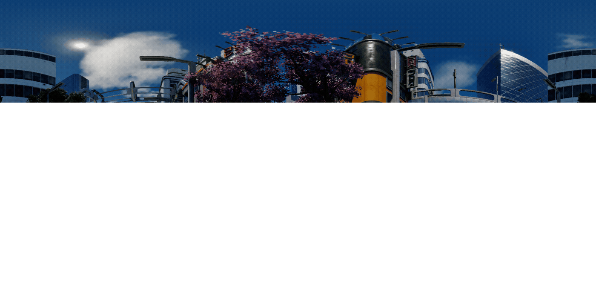

UnrealCV+
📌 UnrealCV+ 使用指南。
UnrealCV+ 基于 UnrealCV 构建，旨在帮助研究人员基于 Unreal Engine（UE4/UE5）构建和使用虚拟世界。它通过插件扩展 Unreal Engine 项目，提供：
- 一组用于与虚拟世界交互的命令。
- UE 环境与外部程序（如 Python）之间的通信。
UnrealCV+ 有两种使用方式：
- 使用内嵌 UnrealCV+ 的已编译游戏二进制文件。这就像运行游戏一样简单，无需了解 Unreal Engine。
- 将 UnrealCV+ 插件安装到 Unreal Engine（UE4/UE5），并使用 UE 编辑器构建新的虚拟世界。
📦 安装 UnrealCV 客户端
建议使用 Anaconda 安装和管理 Python 环境。CV2 用于图像处理，例如提取对象掩码和边界框。Matplotlib 用于可视化。
在终端中运行以下命令安装 UnrealCV+ 客户端：
pip install 'unrealcv>=1.2.0'
注意：UnrealCV 客户端 1.1.7 及更早版本不支持 UnrealCV+ API。
🐍 Python API
启动 UE 二进制文件
from unrealcv.launcher import RunUnreal
ue_binary = RunUnreal(ENV_BIN=env_bin, ENV_MAP=env_map)
env_ip, env_port = ue_binary.start(args.use_docker, parse_resolution(args.resolution), args.display, args.use_opengl, args.offscreen, args.nullrhi, str(args.gpu_id))
连接到 UE 环境
from unrealcv.api import UnrealCv_API
# connect to the launched UE environment
# mode: 'tcp' or 'unix', 'unix' is only for local machine in Linux
unrealcv = UnrealCv_API(port=9000, ip='127.0.0.1', resolution=(640,480), 'tcp')
# examples of calling functions by Python APIs
# get the number of cameras
print(unrealcv.get_camera_num())
# get a color image
img = unrealcv.get_image(cam_id=0, mode='lit', show=True)
# disconnect to UE environment
unrealcv.client.disconnect()
🆕 UnrealCV+ 的改进
📌 通过在 UnrealCV Server 中引入并行处理，多智能体场景下的 FPS（每秒帧数）和图像渲染性能得到提升。请注意，降低图像分辨率、降低渲染质量以及减少环境中的智能体数量，可进一步提升 FPS。
图像渲染速度（UnrealCV vs. UnrealCV+）
整体图像渲染速度提升最高达 120%。
多智能体交互速度（UnrealCV vs. UnrealCV+）
提升多智能体场景下的 FPS 可有效增强基于视觉的多智能体模型的训练和推理。
🆕 UnrealCV+ 的功能特性
以下示例使用高层 Python 封装 UnrealCv_API。
此处不应使用 unrealcv.Client(...)，因为 UnrealCV+ 的便捷方法（如 mount_pak()、capture_panoramic()、start_simple_recording()、spawn_object_from_path() 和 annotate_world()）在 UnrealCv_API 上实现，而非底层 socket Client。
通用设置
from unrealcv import UnrealCv_API
api = UnrealCv_API(
port=9000,
ip='127.0.0.1',
resolution=(640, 480),
)
PAK 挂载
PAK 挂载系统允许在运行时加载额外内容，无需重新构建项目，适用于使用外部资源动态扩展场景。
用法
PAK 系统支持：
- 挂载和卸载 PAK 文件
- 列出已挂载的 PAK 并检查挂载状态
- 枚举 PAK 内的文件和资源
- 扫描并注册资源以供使用
示例
from unrealcv import UnrealCv_API
api = UnrealCv_API(port=9000, ip='127.0.0.1', resolution=(640, 480))
pak_path = 'C:/Content/ExtraAssets.pak'
# Mount a PAK file
api.mount_pak(pak_path, pak_order=0)
# Check if a PAK is mounted
if api.is_pak_mounted(pak_path):
print('PAK is mounted successfully')
# List all mounted PAKs
mounted_paks = api.get_mounted_paks()
for pak in mounted_paks:
print(f'Mounted: {pak}')
# List files inside the PAK
files = api.get_pak_files(pak_path)
print(f'Files in PAK: {len(files)}')
# Get Unreal asset package paths discovered inside the PAK
assets = api.get_pak_assets_in_pak(pak_path)
print(f'Assets in PAK: {len(assets)}')
# Scan assets from a mounted PAK mount point
api.scan_pak_assets('/Game/ExtraAssets', force_rescan=True)
# Load an asset from the PAK
asset_data = api.load_pak_asset('/Game/ExtraAssets/MyActor.MyActor')
print(asset_data)
# Register assets into the UnrealCV asset pool for spawning
api.register_pak_assets('/Game/ExtraAssets', 'Props')
# Unmount when done
api.unmount_pak(pak_path)
全景相机
全景相机捕获会从场景中的某一点生成 360 度等距柱状投影图像，适用于 VR 预览和虚拟导览。

用法
- 为每个相机配置立方体贴图分辨率以控制质量
- 直接将全景图像捕获到文件
- 可选指定输出尺寸
建议分辨率和输出宽高使用 2^n 的数值；否则图像拼接时可能出现裂缝。
示例
from unrealcv import UnrealCv_API
api = UnrealCv_API(port=9000, ip='127.0.0.1', resolution=(640, 480))
# Use a valid camera identifier.
# Legacy numeric camera ids like 0 also work in many cases.
cam_id = 0
# Set panoramic camera resolution (cube map face resolution)
# Higher values mean better quality but slower capture.
api.set_camera_panoramic_resolution(cam_id, 1024)
# Capture a panoramic image to file.
# The output is an equirectangular projection, typically with 2:1 aspect ratio.
output_path = 'C:/captures/panoramic_01.jpg'
api.capture_panoramic(cam_id, output_path)
# Capture with custom output dimensions
api.capture_panoramic(cam_id, 'C:/captures/pano_360.png', width=4096, height=2048)
# You can also capture to other formats such as EXR if your runtime supports them
api.capture_panoramic(cam_id, 'C:/captures/panoramic.exr')
视频录制流水线
C++ 视频录制流水线提供高性能捕获，并具有可配置的设置，适用于大规模生成工作流。帧率根据游戏内时间膨胀动态控制。

用法
- start_simple_recording()：使用输出路径、FPS、时长和通道开始录制
- stop_recording()：停止正在进行的录制
- is_recording()：检查相机当前是否正在录制
- 电影级渲染、视口捕获、预热帧和 tick 间隔的全局设置
示例
import time
from unrealcv import UnrealCv_API
# Use your port num (9000 in default), check with 'vget /unrealcv/status' in the console
api = UnrealCv_API(port=9000, ip='127.0.0.1', resolution=(640, 480))
cam_id = 0 # id 0 is your main viewport
# Configure global recording settings
# api.set_use_movie_quality_rendering(False) # not funcional in v3.0
# api.set_record_via_viewport(False) # not funcional in v3.0
api.set_warmup_frames(10)
# Start recording a 5-second clip at 30 FPS
# Record options can be: 'lit', 'mask', 'depth', 'normal', 'flow', etc.
output_folder = 'C:/recordings/scene01'
fps = 30
duration = 5.0
record_options = ['lit', 'mask']
api.start_simple_recording(cam_id, output_folder, fps, duration, record_options)
# api.set_recording_paused(cam_id, paused=True) # not funcional in v3.0
# api.set_recording_paused(cam_id, paused=False) # not funcional in v3.0
# is_paused = api.get_recording_paused(cam_id) # not funcional in v3.0
# print(f'Paused: {is_paused}')
# Force stop if needed
# api.stop_recording(cam_id)
# Wait for recording to complete
while api.is_recording(cam_id):
print('Recording in progress...')
time.sleep(0.5)
print('Recording completed!')
从路径生成对象
使用完整资源路径直接生成资源，这比基于类生成更适合运行时内容加载。
用法
- spawn_object_from_path()：从完整资源路径生成，可选自动标注
- set_new_obj()：仍可用于基于类的生成，并可在输入类似路径时自动重试
示例
from unrealcv import UnrealCv_API
api = UnrealCv_API(port=9000, ip='127.0.0.1', resolution=(640, 480))
# Spawn an object from its full asset path
# Format: /Game/Path/To/Asset.AssetName
asset_path = '/Game/Props/Chair_Mesh.Chair_Mesh'
obj_name = 'MySpawnedChair'
# With auto-annotation enabled
spawned_name = api.spawn_object_from_path(asset_path, obj_name)
print(f'Spawned: {spawned_name}')
# Without auto-annotation
stable_name = api.spawn_object_from_path(asset_path, 'MySpawnedChairNoAnno', annotate=False)
print(f'Spawned without annotation: {stable_name}')
# set_new_obj() can also auto-detect path-like input and retry with spawn_object_from_path()
api.set_new_obj('/Game/Props/Table.Table', 'MyTable')
标注系统
标注系统为语义分割和对象检测训练工作流提供场景标注。
用法
- annotate_object()：标注单个 actor
- annotate_world()：标注场景中的所有 actor
- clear_world_annotation()：移除所有标注
- 用于性能优化的缓存管理
示例
from unrealcv import UnrealCv_API
api = UnrealCv_API(port=9000, ip='127.0.0.1', resolution=(640, 480))
# Annotate a specific actor by name
api.annotate_object('Chair_01')
# Annotate all actors in the current world
api.annotate_world()
# Clear all annotations
api.clear_world_annotation()
# Enable annotation cache for better performance
api.set_annotation_cache_enabled(True)
# Clear the annotation cache when done
api.clear_annotation_cache()